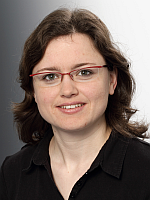

<div id="sub-frame">
  <div class="midBox1">
    <h1>Opening Statement</h1>
    <h3>2:15 pm - 2:30 pm CEST</h3>
    <h3>Lena Oden, FernUni Hagen</h3>

    <h1>Keynote (2:30 pm CEST)</h1>
    <h4><b>The Modular Supercomputing Architecture (MSA)</b></h4>
    <h3><b>Estela Suarez, Jülich Supercomputing Centre (JSC)</b></h3>
    <h4><b>Abstract:</b>
    <font color="#FFFFFF"></font>
    The Modular Supercomputing Architecture (MSA) is a system design that orchestrates heterogeneous computer resources (CPUs, GPUs, many-core accelerators, disruptive technologies, etc.) at system-level, organizing them in compute modules. Modules are clusters of potentially large size, each configured with a specific type of user requirement in mind. The different modules are interconnected via a high-speed network, and a common software stack brings all modules together creating a unique machine. The MSA aims at supporting a large diversity of applications and has been developed at the Jülich Supercomputing Centre (JSC) through the EU-funded DEEP projects.
    </h4>
    <h4><b>Bio:</b>
      Prof. Dr. Estela Suarez is Team Leader at the Jülich Supercomputing Centre (JSC) and Professor at University of Bonn. Her field of research is in HPC system-level architectures including heterogeneous computing resources, such as the Cluster-Booster and the Modular Supercomputing Architectures. She leads the DEEP series of EU-funded R&D projects and the co-design and validation Stream in the European Processor Initiative (EPI). Her background is in Astrophysics (Master from University Complutense of Madrid) and she holds a PhD in Physics from the University of Geneva.
    </h4>

    <h1>Session One: GPU Computing</h1>
    <h3>3:00 pm - 4:00 pm CEST</h3>
    <h3>Session Chair: Simon Garcia de Gonzalo, Barcelona Supercomputing Center (BSC)</h3>
    <ul>
      <li>
        <b>Performance Analysis of Parallel FFT on Large Multi-GPU Systems</b><br/>
        Alan Ayala, Stanimire Tomov, Miroslav Stoyanov, Azzam Haidar, Jack Dongarra
      </li>
      <li>
        <b>Heterogeneous GPU and FPGA computing: a VexCL case-study</b><br/>
        Tristan Laan, Ana Lucia Varbanescu
      </li>
    </ul>

    <h2>Break 4:00 pm - 4:30 pm CEST</h2>

    <h1>Session Two: Accelerator Offloading with OpenMP</h1>
    <h3>4:30 pm - 5:30 pm CEST</h3>
    <h3>Session Chair: Shintaro Iwasaki, Meta AI</h3>
    <ul>
      <li>
        <b>COMPOFF: A Compiler Cost model using Machine Learning to predict the Cost of OpenMP Offloading</b><br/>
        Alok Mishra, Smeet Chheda, Carlos Soto, Abid Malik, Meifeng Lin, Barbara Chapman
      </li>
      <li>
        <b>A Novel Set of Directives for Multi-device Programming with OpenMP</b><br/>
        Raul Torres, Roger Ferrer, Xavier Teruel
      </li>
    </ul>

  </div>

<!-- <div class="midBox1">
  <h1>Best Paper Award</h1>
  <h3>TBD</h3>
</div> -->

<!-- <div class="midBox1">
	<h1>Closing Remarks</h1>
	<h3>TBD</h3>
</div> -->
</div>
